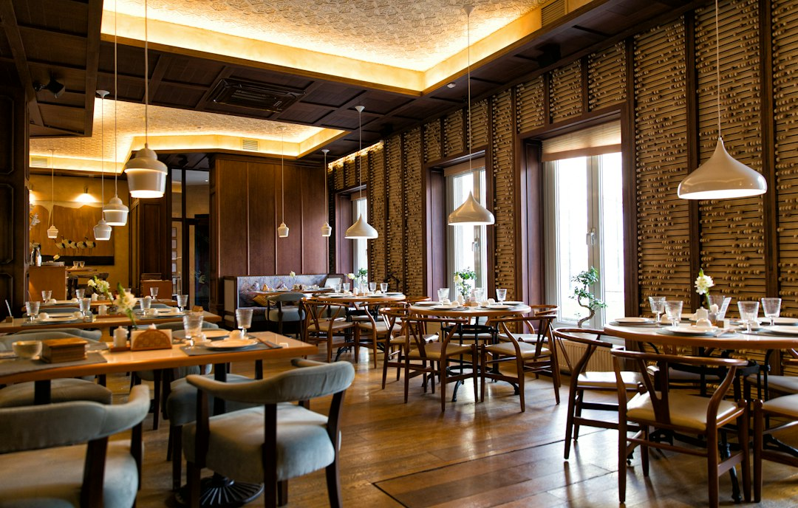

I 3 Errori Fatali nella Gestione del Menu per Ristoratori e Come Smart Experience / Taste Engine Li Risolve

Tre errori comuni nella gestione del menu per Ristoratori, Chef e Titolari Ho.Re.Ca. e la soluzione innovativa Smart Experience / Taste Engine
- I menu PDF tradizionali si presentano sgranati e poco fruibili, rischiando di compromettere l’esperienza cliente.
- I camerieri sono spesso sovraccarichi, incapaci di fornire velocemente e correttamente informazioni su piatti e allergeni.
- Smart Experience / Taste Engine introduce un e-menu interattivo con Maître Virtuale AI, storytelling, abbinamenti sommelier e video immersivi, eliminando inefficienze e migliorando la customer experience.
Analisi approfondita della problematica nella gestione del menu digitale nel settore Ho.Re.Ca.
Il crescente passaggio verso soluzioni digitali nel settore della ristorazione impone nuove sfide operative. Molti ristoratori, pur digitalizzando i menu, fanno affidamento su documenti PDF statici, spesso sgranati e poco chiari, che complicano la consultazione da parte dei clienti, soprattutto su dispositivi mobili. Questi menu non solo risultano esteticamente poco professionali, ma limitano la capacità di comunicare efficacemente ingredienti, allergeni e abbinamenti consigliati.
Inoltre, il personale di sala si trova sotto pressione crescente. I camerieri devono fornire spiegazioni dettagliate sui piatti, gestire richieste particolari e consigliare vini, tutto in tempi molto ristretti, spesso sacrificando la qualità del servizio e rallentando il flusso delle ordinazioni. Queste criticità incidono negativamente sulla customer experience, influenzano la percezione del locale e possono tradursi in perdite di fatturato.
Le conseguenze e i costi di un menu digitale mal gestito
Non agire su queste problematiche significa accettare inefficienze operative e rischi rilevanti. Il menu PDF sgranato e poco interattivo si traduce in una scarsa attrattiva visiva, riducendo l’engagement del cliente e aumentando il tasso di abbandono. I camerieri, oberati di compiti di spiegazione e gestione delle richieste, perdono tempo prezioso dedicabile a upselling e accoglienza.
Inoltre, la mancanza di un sistema efficiente per comunicare allergeni espone il ristoratore a rischi legali e di sicurezza alimentare. Le informazioni imprecise o incomplete sono fonte di insoddisfazione e potenziali reclami, penalizzando la reputazione del locale. Il costo indiretto è quindi molto alto: inefficienza, perdita di clienti e dubbi legati alla professionalità percepita.
Smart Experience / Taste Engine: la soluzione tecnologica per la ristorazione moderna
Smart Experience / Taste Engine, piattaforma SaaS sviluppata da RM Studio, risponde in maniera innovativa a queste sfide operative con un e-menu interattivo e coinvolgente. Il sistema integra un Maître Virtuale AI, simile a un’interfaccia WhatsApp, che guida il cliente nella scelta dei piatti, fornendo descrizioni dettagliate, informazioni su allergeni e consigli personalizzati in tempo reale.
Un’altra funzione chiave è l’abbinamento vini grazie ad un Sommelier digitale che suggerisce la miglior combinazione in base ai piatti scelti, arricchendo l’esperienza gastronomica e favorendo l’incremento del valore medio dello scontrino. Inoltre, il sistema include storytelling emozionali sui piatti e video immersivi che riportano l’atmosfera del locale, aumentando l’engagement e la fidelizzazione.
La piattaforma si configura come un investimento strategico: soluzione SaaS con sblocco una tantum a 390 euro, senza costi di abbonamento, con incluso un jingle promozionale personalizzato. Smart Experience / Taste Engine non è solo un menu digitale ma un vero supporto al processo decisionale del cliente e al lavoro del personale di sala.
| Aspetti | Gestione Tradizionale (Menu PDF) | Con Smart Experience / Taste Engine |
|---|---|---|
| Esperienza Visiva | Menu sgranati, statica, poco attrattiva | Interattiva, video, storytelling emozionale |
| Informazioni su Allergeni | Assenti o vaghe, rischio legale | Dettagliate, consultabili in tempo reale |
| Supporto Camerieri | Sovraccarico, rallentamenti | Maître AI riduce carico e tempi |
| Abbinamenti Vini | Mancanti o soggettivi | Sommelier digitale sempre a supporto |
| Costi | Spesso abbonamenti ripetuti | Sblocco una tantum, senza abbonamenti |
💡 Ti è stato utile questo approfondimento?
Condividilo con un collega o un amico del settore Ristoratori, Chef, Titolari di Locali e Attività Ho.Re.Ca. a cui potrebbe interessare!
FAQ - Domande frequenti su Smart Experience / Taste Engine
1. Come migliora il Maître Virtuale AI l’efficienza in sala?
Il Maître Virtuale AI funge da assistente digitale, rispondendo velocemente alle domande dei clienti su ingredienti, allergeni e caratteristiche dei piatti, riducendo il carico di lavoro del personale di sala e velocizzando l’ordinazione.
2. È necessario avere competenze tecnologiche per utilizzare Smart Experience / Taste Engine?
No. La piattaforma è pensata per essere user-friendly e facilmente integrabile senza la necessità di formazione tecnica approfondita, garantendo un rapido avvio e utilizzo quotidiano.
3. Quali sono i vantaggi economici dell’investimento?
Oltre al miglioramento dell’esperienza cliente e la riduzione delle inefficienze, il costo una tantum di €390,00 senza abbonamenti permette un ritorno sull’investimento evidente grazie a vendite incrementali, upselling e fidelizzazione rafforzata.
Inizia Subito
Sblocco una tantum a €390.00 senza abbonamenti con Jingle promozionale incluso.
Fonti Ufficiali e Risorse Esterne
Scopri l'Intelligenza Artificiale per la tua attività
Ottimizza i processi e aumenta le vendite con le soluzioni B2B di RM Studio.
Scopri Smart Experience / Taste Engine